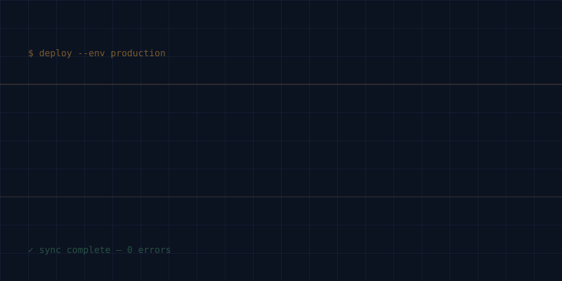
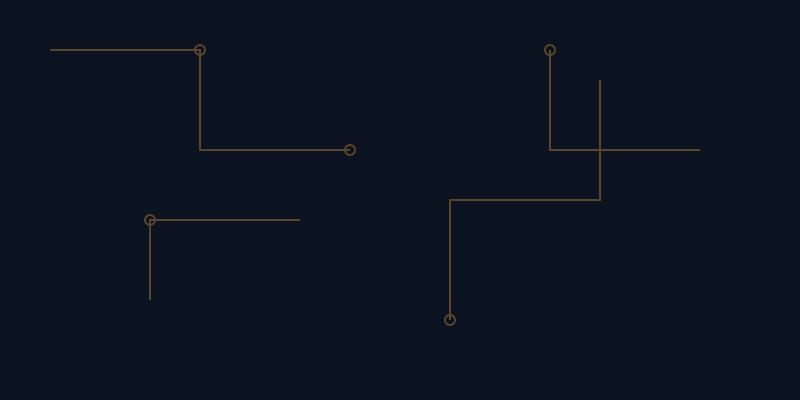

Every image mapped back to a page, most of them real captures — not generated stand-ins — with the connective-tissue graphics held to one consistent style.
Image inventory (mapped to sitemap)
Page
Image need
Source
Status
Hero
Background texture behind the claim
Generated
Keeper — v1 (terminal grid)
Work
Screenshot: fulfillment sync dashboard
Real capture
Required — swap in actual dashboard screenshot
Work
Screenshot: client reporting deck
Real capture
Required — swap in actual export/report
Work
Screenshot: internal billing tool
Real capture
Required — swap in actual product UI
Work
Category icons on each case card
Generated
Keeper — one consistent icon set
About
Headshot / profile photo
Real capture
Required — real photo, never generated
Hero texture — the call

v1 — terminal grid✓ KEEPER

v2 — circuit lines✕ REJECTED
Rejected v2 because: the circuit-board motif is the default "AI/tech" cliché — it says
"generic technology," not "this specific developer's terminal-driven workflow." It doesn't
reference the diff/mono language the rest of the kit already established, so it would read as
a stock texture bolted onto a custom brand rather than an extension of it.
Icon set — connective tissue
sync · pipeline · alert · dashboard — one weight, one accent color, held steady across all four
Where real beats generated
About photo: generating a face is off the table entirely — trust is the job of this page,
and a real photo is the only thing that does it credibly.
Work screenshots: the case studies are the proof layer of the whole site. A generated
"dashboard mockup" would look like a template; a real screenshot — even a slightly rough one —
signals the work actually happened. Real beats polished here.